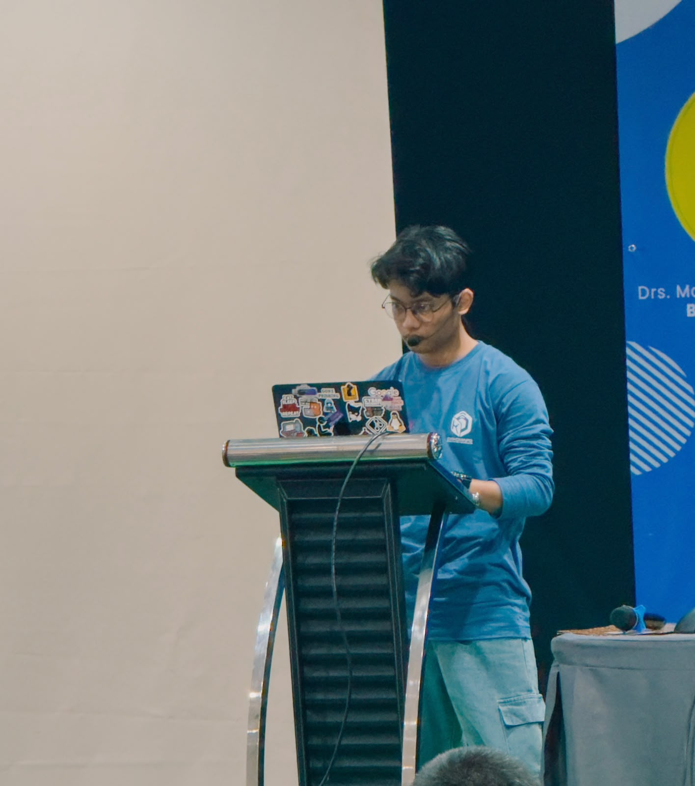

I find the gaps
before they do.
Saya Ali Usman, seorang Penetration Tester yang mengubah celah teknis menjadi temuan yang jelas, terukur, dan bisa ditindaklanjuti.

/ Tentang saya
01Security bukan sekadar menemukan bug. Ini tentang memahami dampaknya.
Saya mendekati setiap sistem seperti teka-teki: memahami cara kerjanya, menguji asumsi, lalu mencari jalur yang tidak terpikirkan sebelumnya.
Hasil akhirnya bukan tumpukan jargon. Saya menyampaikan risiko dengan konteks bisnis, bukti yang dapat direproduksi, dan rekomendasi remediasi yang realistis.
Jelajahi cara saya bekerja ↘/ Area keahlian
02Menguji dari banyak sudut serang.
Assessment yang terarah, metodis, dan selalu berada dalam ruang lingkup yang disepakati.
Toolkit & Methodology
/ Pendidikan & sertifikasi
03Fondasi akademik. Validasi profesional.
Perjalanan belajar yang membentuk cara saya memahami sistem, risiko, dan keamanan.
Riwayat Pendidikan
Sertifikasi
/ Selected work
04Contoh fokus assessment.
* Detail engagement disajikan secara umum untuk menjaga kerahasiaan klien.
/ Cara kerja
05Terstruktur dari scope sampai ret-test.
$ ketik help untuk mulai_
/ Mari berkolaborasi
Punya sistem yang perlu diuji?
Mari mulai dengan ruang lingkup, tujuan, dan konteks risikonya.
Response time Biasanya dalam 1–2 hari kerja